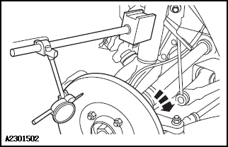
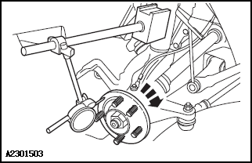

Использовать защитные очки в целях безопасности.
Универсальное оборудование
|
Фиксированный кронштейн индикатора часового типа |
|
Индикатор часового типа |
|
Микрометр |
Выполнить Подъем автомобиля. Ссылка: Подъем
Снять переднее колесо. Ссылка: Колеса и шины
Снять тормозные колодки. Ссылка: Передняя тормозная колодка Задняя тормозная колодка
Установить гайки крепления шины в обратном порядке, зафиксировав тормозной диск на месте.
Установить индикатор часового типа и фиксированный кронштейн на стойку подвески.

Установить индикатор часового типа на расстоянии 10 mm от внешнего края тормозного диска так, чтобы он касался рабочей поверхности тормозного диска под углом 90°.
Повернуть тормозной диск так, чтобы показания индикатора часового типа стали минимальными, затем обнулить индикатор.
Медленно вращать тормозной диск до тех пор, пока показания на индикаторе часового типа не достигнут максимума. Отметить и записать значение торцевого биения.
Стандартное значение для новой детали: 0.050 mm (передний тормозной механизм) / 0.060 mm (задний тормозной механизм)
Если торцевое биение тормозного диска превышает заданный диапазон, следует проверить биение ступицы колеса тем же методом; если биение ступицы моста находится в норме, заменить тормозной диск.
